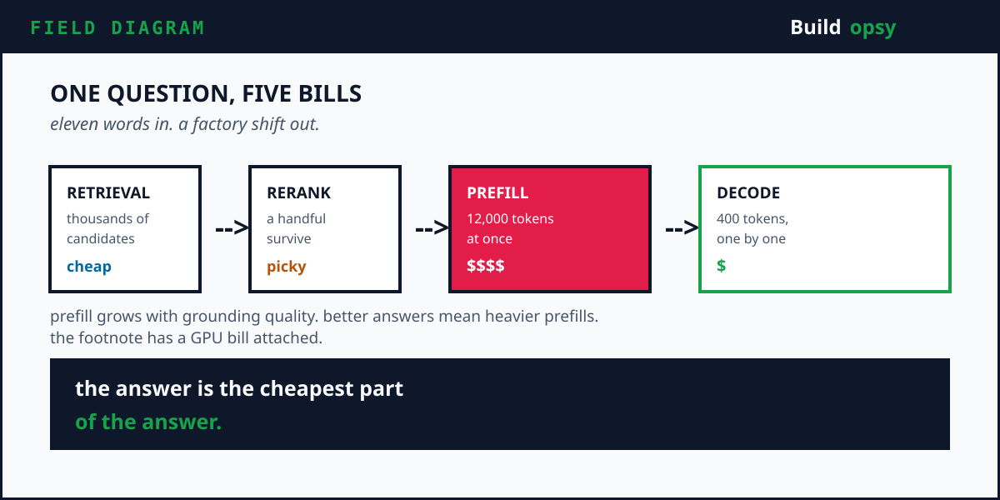
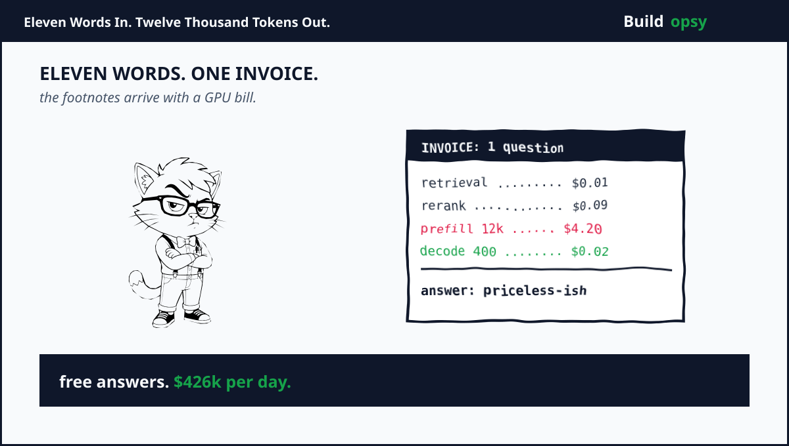

1. Eleven Words In, Twelve Thousand Tokens Out
Ask Perplexity who won last night and the answer lands in about a second with neat little citations. It feels like search finally grew a brain. I love the product. I also keep thinking about what it costs to be this helpful, because behind that calm answer box sits a small supercomputer having a very busy second.
Here is what actually happened while you blinked. The query hit a retrieval layer that searched an index of hundreds of billions of pages. A ranking funnel narrowed thousands of candidates to a handful. The survivors were sliced into sub document chunks and packed into a prompt. A large model read the whole bundle and wrote an answer with a footnote on nearly every sentence. Then the system generated follow up questions using yet more inference. One curious human, one full factory shift.
Count the work. One user question becomes retrieval plus prefilter plus rerank plus a massive prefill plus autoregressive decode plus a second inference pass for related questions. You paid zero marginal effort beyond typing. The platform paid for every stage in compute, memoryand latency budget. Multiply by hundreds of millions of queries per month and the answer box starts looking like the most expensive text field on the internet. Google hands you ten blue links for a fraction of a cent. Perplexity hands you the truth with footnotesand the footnotes arrive with a GPU bill attached.
This is the setup for the whole postmortem. Perplexity built a genuinely better search experience. The same architecture that makes answers trustworthy makes every question cost more than one model call. And the flaw shared by every RAG system on earth lives exactly in that gap.
2. Why Perplexity Is the Right AI Autopsy
Perplexity raised about $200M at a $20B valuation in September 2025 after a $100M round at $18B only two months earlier. Total funding sits near $1.5B to $1.7B with backers including Nvidia, SoftBank, Accel, IVP, NEA, Databricksand Jeff Bezos. Annual recurring revenue was reported near $150M to $200M against that valuation. The CEO disclosed around 780M monthly queries in May 2025 with daily volume near 30M. Third party trackers put mid 2026 volume above one billion monthly queries.
More useful than the money is the paper trail. Perplexity published how its search stack works. Its index tracks more than 200B unique URLs. Its crawler and indexing fleets run tens of thousands of CPUs. Its retrieval pipeline reports median latency near 358ms with 95th percentile under 800ms. Its inference team serves more than twenty models on H100 GPUs with Triton and TensorRT-LLMand it openly discusses disaggregated prefill and decode. NVIDIA documented the deployment as a case study.
That combination is rare. A frontier lab hides the stack. A wrapper hides the scale. Perplexity discloses enough of both that an engineer can reconstruct the machine, stress it with mathand find the structural crack instead of inventing one. After nine years of building backends that looked cheap on a whiteboard and expensive in production, I have learned to trust the companies that publish their bottlenecks. The bottleneck is always where the interesting engineering lives.
3. Reconstructing the Machine
Walk one question through the system. The query enters an API layer that normalizes intent and picks a route. Retrieval hits the index through both lexical and semantic paths and merges the results into a hybrid candidate set. Prefilter stages drop stale or non responsive content. Early rankers score with fast lexical and embedding models. Late stages apply cross encoder rerankers that read query and passage together. The winners get chunked at sub document granularity so the model receives precise passages instead of whole pages of noise.
Then the expensive part starts. The prompt holds the question plus retrieved chunks plus instructions plus citation rules. Prefill processes all of it in parallel and builds the KV cache. Decode generates the answer one token at a time while reusing that cache. A second model pass creates related questions. Caching layers try to absorb repeated work. The response streams back to the user while logging, evalsand billing record what just happened.
Two serving details decide whether this pipeline prints money or burns it. First, the cross encoder rerankers at the end of the funnel read the query and each passage together, which is far costlier per candidate than embedding dot products. You only afford them because the early stages already killed 99 percent of the candidates. Shrink the funnel too aggressively and quality dies. Widen it and the rerankers eat your margin. Second, Perplexity splits prefill and decode onto separate GPU fleets and ships KV caches between them over fast interconnects. One long prompt no longer stalls hundreds of streaming answers, at the price of roughly 100ms extra time to first token for the transfer. I tore this exact pattern apart in my Vercel Fluid Compute postmortem, where waiting on a provider turns into a billing event. Same disease, different organ. Isolate the waiting from the working or the waiting bills you for the working.
Two design choices carry the whole product. First, retrieval and ranking run at both document and sub document level because models are brittle when the prompt drowns in irrelevant context. Second, every sentence of the answer should trace to retrieved evidence, which means the model cannot answer from memory alone. Both choices raise quality. Both choices raise the token count. There is no version of this architecture where grounding is free.

4. The Flaw Every AI Answer Engine Shares
Here is the flaw in one line. A language model reads fast in parallel but only once per promptand everything it reads must be re read for every new question.
Unpack that. Inference has two phases. Prefill processes the full input prompt and builds the KV cache. Decode generates output tokens one by one. Prefill cost grows roughly quadratically with input length because attention compares tokens against tokens. A 12k token RAG prompt does not cost twice as much as a 6k prompt to prefill. It costs closer to four times as much in attention work. Every extra retrieved chunk makes the prompt longer and the prefill heavier. Better grounding means a heavier prefill. That is the prefill tax and it applies to every RAG system, not just Perplexity.

The obvious fix sounds simple. Cache the KV states of popular documents once and reuse them across queries. In practice the cache fights the architectureand it fights dirty. A KV cache entry depends on its full preceding context and its absolute position. Move a chunk to a new spot in a new prompt and the cached states no longer match. Concatenate independently cached chunks and the model sees isolated blocks with broken cross document attention. Every few months a new paper announces progress. Selective recompute of important tokens helps but reintroduces latency. Lightweight adapters around cached blocks help but add training and storage complexity. Storing one cached variant per position explodes storage. Picking which tokens to recompute without a full forward pass is itself an unsolved estimation problem, because the layers that know which tokens matter are the same layers you were trying to skip. The industry keeps announcing that caching solved this. It did not. It moved the pain to a different dashboard.
So the flaw survives for structural reasons, not because teams are lazy. I want to be fair here because Perplexity engineers clearly know all of this. Attention is contextual by definition. A cache that ignores context is fast and wrong. A cache that respects context is accurate and expensive. There is no third option hiding behind a feature flag. Add the freshness war on top. For a fixed crawl budget, refreshing old pages competes with discovering new ones. Perplexity runs tens of thousands of indexing operations per second, yet 200B URLs divided by 30k operations per second still needs about 77 days for one full refresh pass. Do that division yourself whenever a vendor promises a fully fresh index of the entire web. ML prioritization picks the most valuable refreshes first, which is smart triage, not a cure. The web changes faster than any fixed budget can fully trackand stale evidence cited confidently is arguably worse than no evidence at all.
5. The Traffic Model With Real Numbers
Start from the disclosed 780M monthly queries. Divide by 2,592,000 seconds in a 30 day month and the average is about 301 queries per second. Daily volume near 30M gives about 347 per second on average. Apply an eight times evening peak multiplier and the edge must absorb roughly 2,400 to 2,800 query RPS. That number looks calm until fan out enters the picture.
Each query fans out inside the platform. Assume 6 retrieval operations, 3 rerank passes, 1 prefill over 12k tokens, 400 decode stepsand 1 related question pass over 2k tokens. That is about 12 internal operations per user question before counting telemetry, loggingand cache lookups. At 301 average query RPS, the internal fabric sees about 3,600 operations per second. At the 2,400 peak, it sees nearly 29,000 operations per second. The user facing RPS is a headline. The internal RPS is the bill.

Token math makes it concrete. Per query, 12k input tokens plus 400 output tokens plus 2k related pass tokens. At 780M queries per month, input volume is about 9.36 trillion tokens and output volume is about 312 billion tokens. Read those numbers again. Trillion with a T, every single month, just to answer questions people used to skim from blue links. Even at aggressive owned infrastructure rates, moving that many tokens through frontier class models every month is a gravity well. This is why Perplexity routes with classifier models, serves many model sizes, tunes batching against strict latency targetsand openly optimizes every layer from kernels to schedulers. Nobody hand tunes CUDA kernels for fun. You do it when the token meter is the business.
| Workload | Modeled assumption | Result |
|---|---|---|
| Average query RPS | 780M per 30 day month | About 301 per second |
| Peak query RPS | 8 times average | About 2,400 per second |
| Internal fan out | 12 ops per question | 3,600 avg and 29k peak ops |
| Monthly input tokens | 12k per query | About 9.36 trillion |
| Monthly output tokens | 400 per query | About 312 billion |
6. The Current Shaped Bill at 1M RPS
Normalize to one million events per second across retrieval, rerank, prefill, decode supportand telemetry. This is a stress benchmark, not a claim about the live dashboard. Assume the current shaped design pushes every event through origin compute with a blended rate of $0.0000025 per event for compute, routing, queueingand platform overhead. The core math is 1,000,000 times 2,592,000 seconds times $0.0000025 which equals $6.48M per month.
GPU inference sits on top. Assume $4.5M per month for prefill heavy fleets, decode capacity, rerankers, embedding modelsand classifier routing at this normalized scale. Add $1.2M for crawl, indexand storage across hot and cold tiers. Add $600k for edge delivery, observability, evalsand safety systems. The current shaped envelope reaches about $12.78M per month, which is roughly $426k per day.
Three multipliers inflate the numberand all three are self inflicted in the most respectable way. First, uncached retrieval repeats the same chunk scoring for similar questions, because two users asking the same thing with different words still trigger fresh ranking work. Second, full prefill repeats attention over identical documents that merely sit in a new order, which is the KV cache flaw wearing a production uniform. Third, related question generation doubles model work for engagement instead of revenue. The feature that makes users stay longer is the feature that makes GPUs stay busier. None of these are bugs in the narrow sense. Each one is the architecture doing exactly what it was told to do, which is precisely why it is so hard to fix. You cannot patch away behavior the product spec demands.
7. The Proposed Shape at 1M RPS
The fix chain attacks the bill in order. Classify the query before spending retrieval budget. Reuse chunk level caches with query aware recompute instead of full prefill. Batch rerank work and cap candidate depth by question difficulty. Isolate prefill from decode on separate fleets so long prompts stop stalling token streaming. Verify citations against retrieved spans instead of regenerating whole answers on retry. If this chain looks familiar, it should. I proposed the same shape for serverless AI workloads in the Vercel Fluid Compute teardown and for agent retry storms in the Replit Agent postmortem. Different companies, same religion. Stop paying for work nobody asked you to repeat.
Assume those controls cut origin events from 1M to 280k per second and drop the blended origin rate to $0.0000012 per event through better packing. The core work becomes 280,000 times 2,592,000 times $0.0000012 which equals about $871k per month. Add $1.6M for GPU inference after routing easy questions to smaller models, $500k for index and storage with tighter hot tiersand $350k for edge and safety. The proposed envelope is about $3.32M per month, roughly $111k per day.
| At 1M events per sec | Current shaped design | Proposed design |
|---|---|---|
| Origin events | 1,000,000 per sec | 280,000 per sec |
| Core event work | $6.48M per month | $871k per month |
| GPU inference | $4.5M per month | $1.6M per month |
| Index and storage | $1.2M per month | $500k per month |
| Edge and safety | $600k per month | $350k per month |
| Total | $12.78M per month | $3.32M per month |
| Difference | $9.46M per month, about 74 percent lower | |
8. What I Would Change Before the Next Billion Queries
First, make retrieval depth a function of question value. A factoid needs a narrow funnel. A deep research task earns the full pipeline with decomposition and multi hop retrieval. Running every question through the maximum pipeline is how a search box becomes a supercomputer billing event.
Second, fix the cache key strategy. Cache at chunk level with position tolerant layouts, keep hot chunks in GPU adjacent memoryand recompute only query relevant tokens with a bounded budget. Measure recall loss per recompute budget on production query samples. A cache nobody trusts is just a slower database with extra steps. My Notion teardown showed the storage version of this lesson. Hot data earns fast tiers, cold data earns object storageand pretending everything is hot is how you fund your cloud provider's next data center.
Third, split the fleets and mean it. Prefill nodes want throughput. Decode nodes want steady latency. Mixing them lets one long prompt stall hundreds of streaming answers. The KV transfer penalty near 100ms is real, but predictable latency with a known tax beats unpredictable latency with hidden stalls.
Fourth, put citations on a diet. Citing every sentence is a trust feature with a token price. Retrieve tighter spans, generate shorter grounded claimsand verify against spans instead of asking the model to restate the world. Citation density should be a tuned parameter, not a moral absolute.
Fifth, charge the query for what it consumes. Track cost per answered question by category, model path, retrieval depthand cache outcome. Free tiers with unlimited deep research are a growth strategy with a GPU shaped hole. Usage awareness belongs in the product, not just in finance.
9. The Verdict
Perplexity earned its valuation by making answers feel instant and sourcedand I am not here to pretend that was easy. The postmortem does not take that away. It names the price. Every trustworthy answer repeats retrieval, ranking, prefill, decodeand verification. The prefill tax grows with grounding quality. The KV cache refuses free reuse because attention is contextual. The crawl budget refuses full freshness because the web is bigger than any fleet. These are physics problems wearing cost center costumesand physics does not negotiate no matter how good your Series E deck looks.
The way out is not a bigger model. It is a stricter pipeline. Classify first. Retrieve only what the question earns. Reuse caches with bounded honesty. Split prefill from decode. Verify spans instead of regenerating essays. At the normalized million event scale, that discipline is worth about $9.46M per month in this model. The next billion queries will punish whoever forgets it.
The last cliffhanger is the one Perplexity already sees coming. Agentic tasks can fire hundreds or thousands of retrieval operations in minutes. One user question becomes a swarm. When search becomes code that an agent writes and runs, who prices the loop. The model, the platform, or the customer who only typed eleven words.
The model did not hallucinate the bill. The architecture itemized it.
Keep Reading the Postmortem Series
If this one made you angry at your own inference bill, good. That was the point. The same cost disease shows up in different organs across this series. My Vercel Fluid Compute teardown covers what happens when serverless functions spend their lives waiting on providers. My Replit Agent postmortem covers what happens when one prompt becomes a swarm of tool calls. My Notion teardown covers what happens when vector indexes pretend cold data is hot. Same religion, different crime scenes.
Sources and Method
Funding, valuation, query volume, index scale, latencyand inference stack come from company posts and credible coverage linked below. RPS and cost math is my normalized scenario model, not a private invoice. KV cache and RAG tradeoff claims follow public research on cache reuse and attention costs.